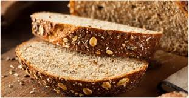

Na tihoj vatri istopiti margarin i čokoladu da se dobije glatka masa. 2. Dok se to topi dobro umutiti 4 jajeta i postepeno dodati šećer. 3. U umućena jaja i šećer dodati rastopljenu masu.. 4.Kada se sve to dobro umuti dodati brašno, još malo mutiti, pa zatim u kalup za projice staviti papirne korpice, prečnika 6-7 cm, i u njih sipati masu do vrha. 5. Peći na temperaturi od 220°C 7 min. dok se ne napravi tanka kora.
Pileća salata
Pileće belo meso operite i osušite. Svako parče potopite u umućeno jaje, uvaljajte u kornfleks, poređajte u podmazan pleh obložen papirom za pečenje i pecite 20 minuta u rerni zagrejanoj na 100 stepeni, a zatim ostavite sa strane. Oba avokada prepolovite i uklonite im košticu. Kašičicom izvadite pulpu jednog avokada, pomešajte je sa sokom jednog limuna i snažno promešajte. Pulpu drugog avokada iseckajte na kriške, prelijte sokom preostalog limuna i sačuvajte za kasnije. Pripremljeni pire od avokada pomešajte sa majonezom, dodajte pikantni senf i kiselu pavlaku i sve sjedinite. Salatu operite, odvojte i prstima iscepkajte listove, pa preručite u veću posudu. Dodajte paradajz isečen na kriške, iseckani mladi luk, ohlađenu piletinu i kriške avokada. Posolite, dodajte pola količine pripremljenog preliva od avokada i majoneza i promešajte, a drugu polovinu prelijte preko salate. Do serviranja čuvajte u frižideru.

Integralni hleb
1. Kvasac razmututi sa malo vode.
2. U vanglu za mešenje sipati brašno, dodati so, promešati. Dodati razmućen kvasac i mlaku vodu, pa mesiti varjačom dok se ne dobije glatko testo. Sud pokriti plastičnom folijom i ostaviti oko 1h da testo naraste.
3. Premesiti, oblikovati veknu (možete napraviti tri male vekne od ove količine), poređati u pleh. Veknice ovlaš posuti brašnom, pa zaseći nožem par puta. Ostaviti još 20 minuta.
4. Za to vreme ugrejati rernu, pa ispeći hleb (kod mene se obično peče 10 minuta na maksimumu pa još 20 na 180).